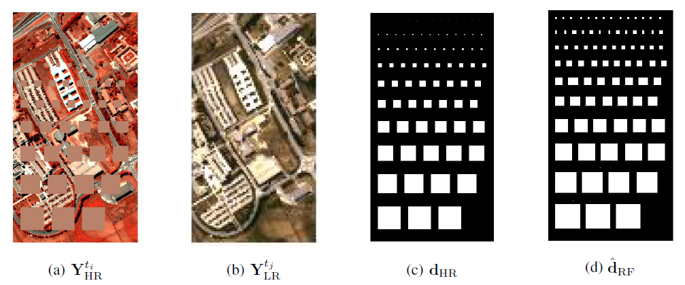
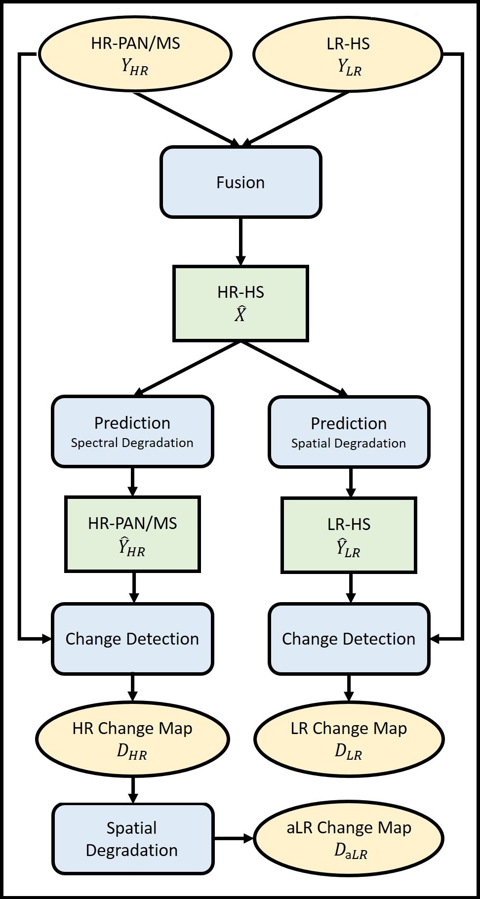
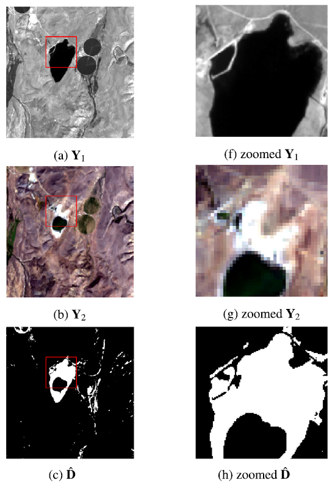
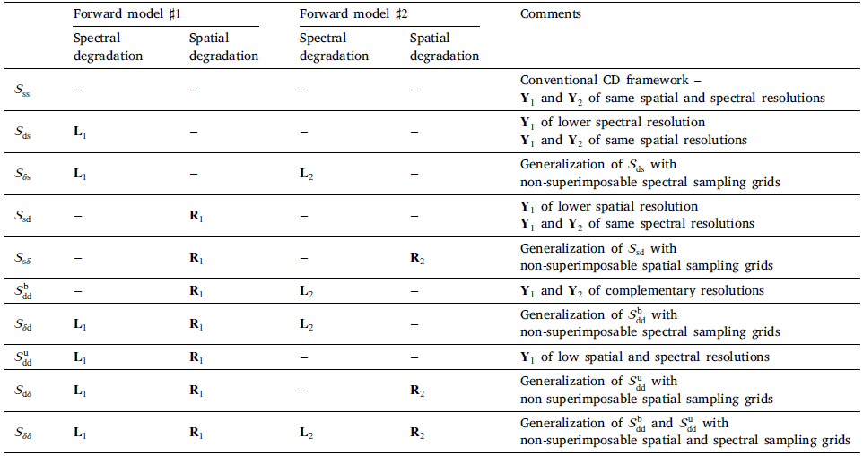

Change detection between multi-band images with different spatial and spectral resolutions
Archetypal scenarios for change detection generally consider two images acquired through sensors of the same modality.
However, in some specific cases such as emergency situations, the only images available may be those acquired through different kinds of sensors.
More precisely, we addresses the problem of detecting changes between two multi-band optical images characterized by different spatial and spectral resolutions.
This sensor dissimilarity introduces additional issues in the context of operational change detection.
To alleviate these issues, classical change detection methods are applied after independent preprocessing steps (e.g., resampling)
used to get the same spatial and spectral resolutions for the pair of observed images. Nevertheless, these preprocessing steps tend to throw away relevant information.

Fig. 1. Change detection for high-resolution multispectral (HR-MS) and low-resolution hyperspectral (LR-HS) images: (a) HR-MS observed image, (b) LR-HS observed image, (c) actual change mask change, change mask estimated by the proposed robust fusion-based approach.
Change detection as a 3-step procedure
The proposed strategy consists of a 3-step procedure:
- [Fusion] inferring a high spatial and spectral resolution image by fusing the two observed images characterized one by a low spatial resolution and the other by a low spectral resolution,
- [Prediction] predicting two images with respectively the same spatial and spectral resolutions as the observed images by degradation of the fused one,
- [Detection] implementing a decision rule to each pair of observed and predicted images characterized by the same spatial and spectral resolutions to identify changes.
The overall pipeline is depicted in Fig. 2.

Fig. 2. Overview of fusion-based change detection framework.
The proposed fusion-based change detection approach is detailed in the paper published in IEEE Trans. Geosci. Remote Sensing:
- article
 .
.
It is worth noting that the 1st step of the pipeline (fusion) can be fully tailored by the end-user, by choosing any of the fusion algorithms proposed in the literature. A comparative study of the CD performance w.r.t. various fusion algorithms has been conducted in the Proc. IEEE Int. Geosci. Remote Sens. Symp. (IGARSS):
- article .
Similarly, the last step (detection) of the proposed framework can be conducted by any CD technique designed to handle images of the same spatial and spectral resolution. In the above papers, this step is achieved by change vector analysis but any other technique could be applied, which makes the framework highly customizable.
Change detection as a robust fusion problem
We propose a method that more effectively uses the available information by modeling the two observed images as spatial and spectral versions of two (unobserved)
latent images characterized by the same high spatial and high spectral resolutions. As they cover the same scene, these latent images are expected to be globally
similar except for possible changes in sparse spatial locations. Thus, the change detection task is envisioned through a robust multi-band image fusion method which
enforces the differences between the estimated latent images to be spatially sparse. This robust fusion problem is formulated as an inverse problem which is iteratively
solved using an efficient block-coordinate descent algorithm. The proposed method is applied to real panchormatic/multispectral and hyperspectral images with simulated
realistic changes. A comparison with state-of-the-art change detection methods evidences the accuracy of the proposed strategy. Some results are depicted in Fig. 3.

Fig. 3. Illustrative results of the robust fusion-based change detection framework on real images.
For the particular scenario of handling a high spatial-low spectral resolution image and a low spatial-high spectral resolution image, the proposed robust fusion-based change detection approach is detailed in the paper published in IEEE Trans. Computational Imaging:
- article .
This particular case can be extended to a much more general framework, able to tackle any of the scenarios defined by two images of the same or different spatial and/or spectral resolutions. The
10 distincts scenarios are reported in Table 1 below.

Table 1. Overview of the spectral and spatial degradations w.r.t. to experimental scenarios. The symbol "−" stands for "no degradation"
The corresponding robust fusion-based CD algorithms are introduced and discussed in the paper published in Information Fusion:
- article .